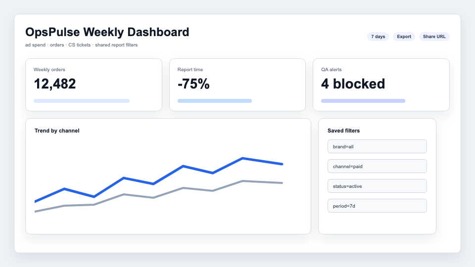
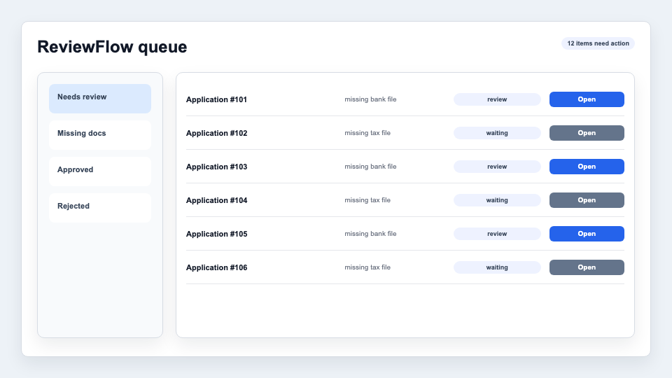

Example Product JD에 맞춘
정유진 프론트엔드 포트폴리오

프로젝트 목록

OpsPulse Dashboard
- 2p프로젝트 소개, 담당 역할, 대시보드 화면
- 3p핵심 기술 이슈 - TanStack Query + URL query

ReviewFlow Admin
- 4p검토 큐 문제, 설계 결정, 결과

FormGuard System
- 5p폼 검증, 컴포넌트 상태 규칙
- 6pJD 연결점과 제출 전 교체 항목
- 1 -